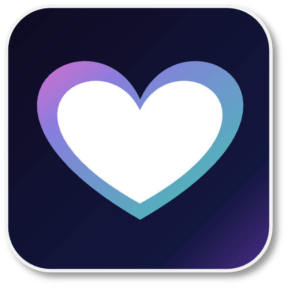

FELSMATA（フェルスマータ）は、ウェアラブル×AIで、毎日の身体のデータを「気づき」と「次の一手」に変えるチーム。「なんだか今日は調子が出ない」——そのサインをいち早くとらえ、休み方・動き方・食べ方のヒントを届けます。
「ずっと、健康でいたい。」
それはきっと、誰もが持つ願いです。
でも現実には、こんな“差”があります。
男性 約8.5年／女性 約11.6年（厚生労働省 健康寿命関連指標より）
でも、あきらめるのは、まだ早い。
その差を分けるのは、
生まれ持った体質ではありません。
約80%
——健康を左右するのは、毎日の生活習慣。
つまり、未来の健康の多くは、今日からの選び方ひとつで、変えていけるということ。
※双子研究では、寿命に対する遺伝の影響は約2割にとどまり、残りの多くは生活習慣・環境によるとされています（Herskind et al., Human Genetics, 1996）。
「歳だから仕方ない」を、「まだ、やれることがある」へ。
老いていくスピードは、決して一定ではありません。一人ひとりが自分のテンポで、人生をもっと長く、健やかに奏でていける。その“あたりまえ”を、社会に広げていきます。
年齢を重ねても、やりたいことを、やりたいままに。
不調や我慢に縛られる時間を、少しでも短く。健康なまま長く生きられる毎日を、特別な人だけのものにしない。
——それが、FELSMATAがめざす未来です。
その理想を、あなたの毎日から
壮大な理想だけでは、暮らしは変わりません。だから私たちは、あなたの生活習慣を“調律”するアプリ FELSTUNING をつくっています。楽器を少しずつ整えるように、日々のズレに気づき、無理なく整えていく。あなたの健康の伸びしろを、いちばん近くで支えるパートナーです。

対象は、健康にも仕事にも意識が高い20〜50代のビジネスパーソン。ウェアラブルや主観チェックで集めたデータを、可視化・理解で終わらせず、今日の一手に翻訳します。
「数字はある。でも、一般論はもう十分」
睡眠・心拍・HRV・活動量をまとめ、本人の平常時とのズレと根拠を表示。一般論ではなく、あなたの文脈に沿って今日試せる一手まで落とし込みます。
「今日は攻めるべきか、整えるべきか迷う」
起きた瞬間、睡眠・心拍・HRVと予定をひとつの画面に。攻めるか、整えるか、守るか。明日の集中を守る朝の調律を始められます。
「睡眠時間はとっているのに、朝がつらい」
睡眠時間だけでは説明できない朝の重さを、深い睡眠・HRV・負荷の傾向から確認。断定ではなく、根拠つきの見立てとして返します。
「仕事中の集中を、コンディションから整えたい」
大事な会議、移動、締切のある日も、今日の負荷に合わせて休み方・動き方を相談。健康管理を、仕事の作戦に接続します。
「崩れた日ほど、立て直し方がわからない」
飲み会・出張・寝不足の翌日も責めずに、運動・休息・食の候補を複数提示。我慢ではなく、戻れる選択肢を増やします。
実際に触れます。測る→わかる→今日の一手へ進む流れを確認できます。
今日のリカバリースコアと「攻める・整える・守る」の判断、朝の調律メニューがひと目で。
睡眠・HRV・心拍・歩数の推移。本人の平常時とのズレと根拠を確認できます。
気になることを相談。あなたのデータと予定を踏まえ、今日試せる一手を提案します。
今のコンディションに合う食を、いくつかの選択肢で。選ぶのは、あなた。
睡眠・集中チェック・主観記録の傾向から、自分なりの調律ラインが見えてくる。
※ β開発中のイメージです。デザイン・機能は変更される場合があります。
FELSTUNINGはまだ開発中です。健康や仕事への意識が高い方の「データは見ているのに活かせない」「一般論ではなく自分に合う一手が欲しい」という声を探しています。まずは5分ほどのアンケートから。よければオンラインインタビューにもご協力ください。
アンケートに答える（約5分）